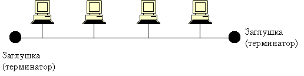

Какую простую геометрическую фигуру, способную объединить множество точек, мы знаем ещё со школы? Правильно, это незамкнутая линия.
А почему бы нам не объединить последовательно все компьютеры в единую линейную сеть и не мучаться над проектированием каких-то сложных сетей? На английском языке такая сеть называется "point-to-point" или "от точки к точке".
Давайте построим такую сеть и затем разберем, почему это плохая идея. Главное - не делайте линию замкнутой, т.к. это особенность шинной и "point-to-point" топологий, о которых рассказ будет после мини-игры.
А теперь представьте, что один из множества компьютеров вышел из строя, или между какими-то компьютерами повредился провод? Тогда-то наша сеть и перестанет работать.
Нам необходимо уменьшить вероятность отказа системы. Как это можно сделать? Мы можем передавать информацию не от компьютера к компьютеру, а по общему кабелю, к которому эти компьютеры подключены. Такая топология называется "шинной", от названия шины - проводника для передачи информации. На английском языке такая топология называется "bus network". Да-да, прямо как автобус, который на каждой остановке высаживает и принимает пассажиров.

Как мы видим - в случае поломки одного из компьютеров система не выходит из строя. Однако все равно остается вероятность поломки общего кабеля (шины), в таком случае мы сможем легко определить место поломки, т.к. последний до обрыва компьютер все еще будет получать информацию. Плюсом можно считать то, что в данную сеть легко добавить новый компьютер или убрать старый. Однако имеются и недостатки: нельзя до бесконечности добавлять новые узлы, это связано с ограничениями протоколов, а также все компьютеры используют один канал передачи информации - это сказывается на скорости обмена сообщениями.
К сожалению, имеется еще один крупный недостаток - кабель позволяет передавать информацию только в одну сторону. Если запустить два пакета информации, как два поезда, навстречу друг к другу, то они столкнуться и повредятся. Это называется коллизией пакетов. Как же решить эту проблему? Добавить второй провод? Можно, но это сильно усложняет систему, так что для решения этой проблемы используется кольцевая топология. О ней мы поговорим на следующей странице.